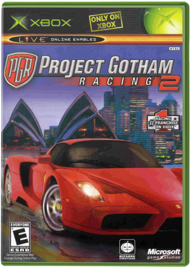
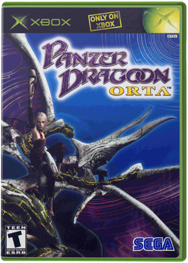
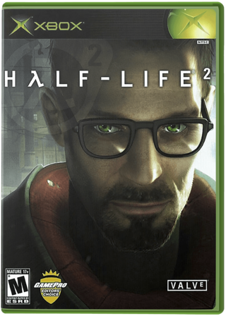
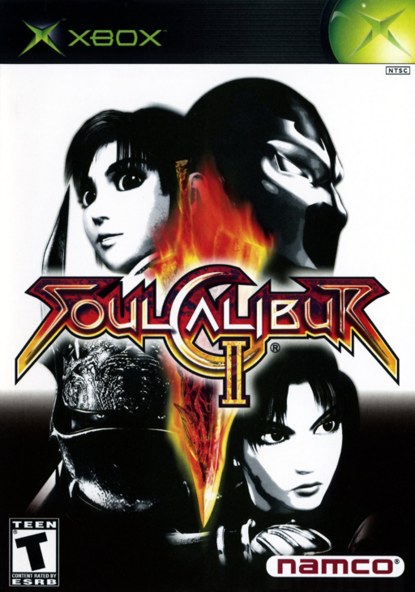
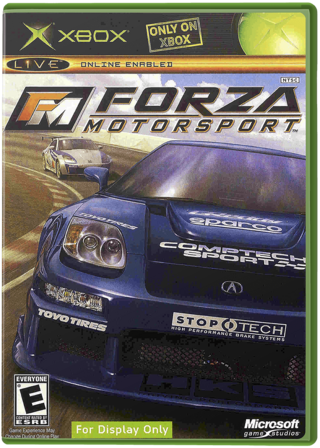
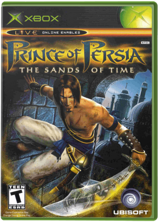
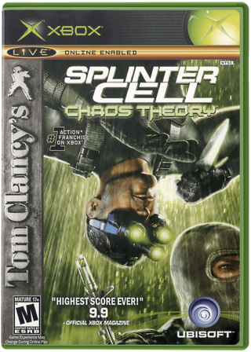
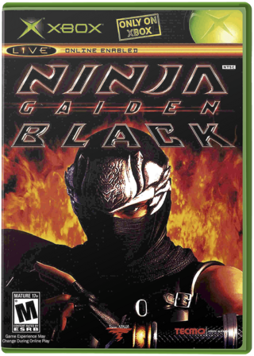
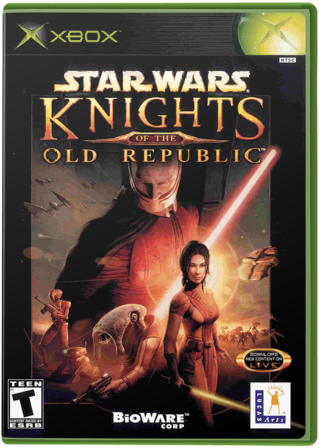
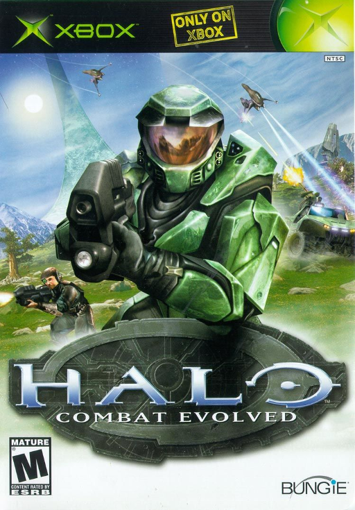

Del #10 al #1: los juegos que pusieron a la Xbox de Microsoft en la mesa grande, segun la critica y el legado que dejaron. Empezamos desde abajo.
03
#10
TOP

XBOX
TARROVISIONCH 10
NO SIGNAL
Inserta gameplay aqui
PROJECT GOTHAM RACING 2
XBOX · 2003 · MICROSOFT GAME STUDIOS
▶ POR QUECarreras arcade en ciudades reales, de Hong Kong a Edimburgo, donde manejar con estilo suma Kudos. 90 en Metacritic y exclusivo de Xbox.
04
#9
TOP

XBOX
TARROVISIONCH 09
NO SIGNAL
Inserta gameplay aqui
PANZER DRAGOON ORTA
XBOX · 2003 · SEGA
▶ POR QUEUn dragon, un jinete y mundos que se despliegan alrededor tuyo. Sega revivio Panzer Dragoon en Xbox: 90 en Metacritic y pieza de museo en el Smithsonian.
05
#8
TOP

XBOX
TARROVISIONCH 08
NO SIGNAL
Inserta gameplay aqui
HALF-LIFE 2
XBOX · 2005 · VALVE / ELECTRONIC ARTS
▶ POR QUEEl shooter de Valve con la pistola de gravedad llego a Xbox un año despues del PC. 90 en Metacritic en consola y 39 premios de Juego del Año en su estreno.
06
#7
TOP

XBOX
TARROVISIONCH 07
NO SIGNAL
Inserta gameplay aqui
SOULCALIBUR II
XBOX · 2003 · NAMCO
▶ POR QUEArmas, peleas 3D y un invitado exclusivo por consola: en Xbox fue Spawn. Namco la trajo del arcade a casa y saco 92 en Metacritic para Xbox.
07
#6
TOP

XBOX
TARROVISIONCH 06
NO SIGNAL
Inserta gameplay aqui
FORZA MOTORSPORT
XBOX · 2005 · MICROSOFT GAME STUDIOS
▶ POR QUELa respuesta de Microsoft a Gran Turismo: 231 autos con licencia, daño que cambia como se maneja y juego en linea. 92 en Metacritic para Xbox.
08
#5
TOP

XBOX
TARROVISIONCH 05
NO SIGNAL
Inserta gameplay aqui
PRINCE OF PERSIA: THE SANDS OF TIME
XBOX · 2003 · UBISOFT
▶ POR QUEEl principe, la daga del tiempo y la posibilidad de rebobinar tus errores. Jordan Mechner revivio su saga y saco 92 en Metacritic en Xbox.
09
#4
TOP

XBOX
TARROVISIONCH 04
NO SIGNAL
Inserta gameplay aqui
TOM CLANCY'S SPLINTER CELL: CHAOS THEORY
XBOX · 2005 · UBISOFT
▶ POR QUESam Fisher, sombras y sigilo puro. Chaos Theory pulio la formula con cooperativo y espias contra mercenarios: 94 en Metacritic para Xbox.
10
#3
PODIO

XBOX
TARROVISIONCH 03
NO SIGNAL
Inserta gameplay aqui
NINJA GAIDEN BLACK
XBOX · 2005 · TECMO
▶ POR QUERyu Hayabusa, combate rapidisimo y un reto que no suelta a nadie. Team Ninja pulio su reboot en 2005 y Black saco 94 en Metacritic.
11
#2
PODIO

XBOX
TARROVISIONCH 02
NO SIGNAL
Inserta gameplay aqui
STAR WARS: KNIGHTS OF THE OLD REPUBLIC
XBOX · 2003 · LUCASARTS
▶ POR QUEEl rol de BioWare en una galaxia muy lejana, con decisiones de luz y oscuridad y el giro que todos recuerdan. 94 en Metacritic y Juego del Año 2003.
12
#1
EL TRONO

XBOX
TARROVISIONCH 01
NO SIGNAL
Inserta gameplay aqui
HALO: COMBAT EVOLVED
XBOX · 2001 · MICROSOFT GAME STUDIOS
▶ EL TRONOEl juego que definio la Xbox. Bungie, el Jefe Maestro y un shooter de consola con vehiculos, dos armas y 97 en Metacritic: la nota mas alta de la consola.
13
ANALISIS DEL TOP
EL VEREDICTO
Los diez superan el 90 en Metacritic y Halo llega a 97. Hay shooters, rol, sigilo, accion, carreras y peleas, todos entre 2001 y 2005: los años en que Microsoft se hizo un lugar junto a Sony y Nintendo.
14
TU TURNO
¿Y TU TOP?
¿Cual es tu juego de Xbox favorito de esta lista? ¿Que juego le faltaria al top segun tu criterio? Dejalo en los comentarios. Suscribete a Retrotarros.